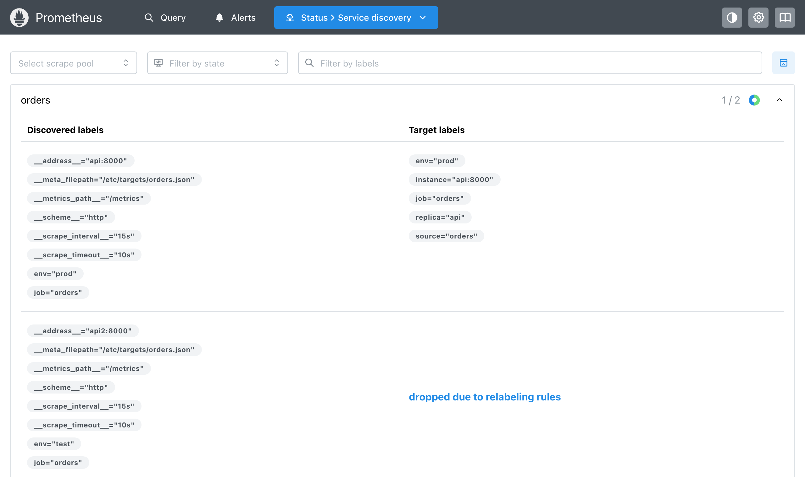

Модуль 4 · сбор и хранение · сбор и хранение
Глава 4.3
Relabeling: метки
до опроса и после
В главе 4.2 найденные метки сами превращались в метки target. Правила relabeling управляют этим переходом: отбрасывают target, создают метки и выбрасывают лишние ряды. В главе разобраны оба места для правил, их запись и частая ошибка.
- Категория
- Сбор данных
- Уровень
- Средний
- Опирается на
- Глава 3.3: метки и ряд; глава 4.2: найденные метки
- Результат
- Правила keep, drop и replace до опроса и после него
§1Два места для правил
На въезде решают, какую машину пустить и какой номер ворот ей дать. После разгрузки решают, что из привезённого класть на полки.
До опроса решают, какой target опрашивать и какие у него метки. После опроса — какие ряды сохранить.
Правила пишут в задании в двух блоках. relabel_configs работает с метками target до опроса: может отбросить target целиком или изменить его метки. metric_relabel_configs работает с каждым рядом из ответа после опроса, перед записью в базу. Порядок на пути числа:
Значит, сэкономить опрос можно только первым блоком: второй получает ряды, когда ответ уже прочитан.
§2Как записано правило
Правило берёт значения меток из source_labels, сравнивает с regex и выполняет действие action. В задании ниже четыре правила: три до опроса и одно после.
relabel_configs:
# 1. Опрашивать только копии из боевого окружения.
- source_labels: [env]
regex: prod
action: keep
# 2. Имя копии без порта: api:8000 -> api.
- source_labels: [__address__]
regex: '([^:]+):\d+'
target_label: replica
replacement: '$1'
# 3. Из какого файла пришёл target: /etc/targets/orders.json -> orders.
- source_labels: [__meta_filepath]
regex: '.*/(.+)\.json'
target_label: source
metric_relabel_configs:
# 4. Не хранить метрики процесса Python и сборщика мусора.
- source_labels: [__name__]
regex: '(process|python)_.*'
action: drop
keep оставляет target, если значение подошло под regex, drop — наоборот, отбрасывает. У правил 2 и 3 действие не указано, поэтому оно replace: часть значения в скобках, $1, записывается в метку target_label. В правиле 3 нет и replacement — по умолчанию это тот же $1. Regex всегда сравнивается со всем значением целиком, как в селекторах главы 3.3.
§3Результат до опроса
В файле target две копии: api с env="prod" и api2 с env="test". Страница Service discovery после запуска с этими правилами:

У api справа две новые метки: replica="api" из адреса и source="orders" из пути к файлу. api2 не прошёл правило 1 и отмечен «dropped due to relabeling rules» — его не опрашивают вовсе.
Новые метки меняют набор меток, а значит, и ряды (глава 3.3). Сразу после смены правил запрос scrape_samples_scraped{job="orders"} вернул три ряда: два прежних без replica и один новый. Прежние ряды перестали получать отсчёты и исчезли из запросов позже.
§4Те же правила на Python
Правила проще понять, если выполнить их вручную. Скрипт берёт найденные метки обоих target из API Prometheus, применяет к ним правила 1–3 и выводит рядом то, что получилось у самого Prometheus:
import json import re import urllib.request def keep(labels, source, regex): # regex в Prometheus сравнивается со всем значением целиком return re.fullmatch(regex, labels.get(source, "")) is not None def replace(labels, source, regex, target, replacement): m = re.fullmatch(regex, labels.get(source, "")) if m: labels[target] = m.expand(replacement.replace("$1", r"\1")) def relabel(found): labels = dict(found) if not keep(labels, "env", "prod"): return None # target отброшен до опроса replace(labels, "__address__", r"([^:]+):\d+", "replica", "$1") replace(labels, "__meta_filepath", r".*/(.+)\.json", "source", "$1") labels.setdefault("instance", labels["__address__"]) return {k: v for k, v in sorted(labels.items()) if not k.startswith("__")} with urllib.request.urlopen("http://localhost:9104/api/v1/targets?state=any") as r: data = json.load(r)["data"] found = [t["discoveredLabels"] for t in data["activeTargets"] + data["droppedTargets"]] for labels in found: print(labels["__address__"], "->", relabel(labels)) print("у Prometheus:", [t["labels"] for t in data["activeTargets"]])
api:8000 -> {'env': 'prod', 'instance': 'api:8000', 'job': 'orders', 'replica': 'api', 'source': 'orders'}
api2:8000 -> None
у Prometheus: [{'env': 'prod', 'instance': 'api:8000', 'job': 'orders', 'replica': 'api', 'source': 'orders'}]
Результаты совпали. В скрипте видны два шага, которые Prometheus делает сам после правил: если метки instance нет, она берётся из __address__, а все метки с __ отбрасываются. re.fullmatch повторяет главное свойство regex в правилах — сравнение со всем значением.
§5Отбор рядов после опроса
Правило 4 стоит в metric_relabel_configs и смотрит на __name__ — имя каждого ряда. Сколько оно выбросило, показывают два служебных ряда, которые Prometheus пишет после опроса:
scrape_samples_scraped{job="orders"} 30
scrape_samples_post_metric_relabeling{job="orders"} 14
Сервис отдал 30 отсчётов, в базу попало 14. Выброшены ровно 16 строк process_* и python_* из ответа сервиса. При этом сервис всё так же собирает эти 16 чисел, а Prometheus их скачивает и разбирает: правило после опроса экономит только место в базе. Если метрика не нужна никому, её убирают в самой программе (глава 3.7).
§6Правило, которое отбросило всё
Опыт: в правиле 1 вместо regex: prod написано regex: pro. Похоже на «начинается с pro», но regex сравнивается со всем значением, а prod ≠ pro. Итог после запуска:
active 0 dropped 2 SUCCESS: /p/prometheus-relabel-oshibka.yml is valid prometheus config file syntax
Оба target отброшены, задание orders не опрашивается. Ошибки при этом нет нигде: promtool check config проверяет только запись настроек, смысл правил он не оценивает. Поэтому после правки relabeling открывают Status → Service discovery и смотрят, сколько target осталось. Для «начинается с» нужен regex: pro.*.
§7Проверьте себя
Вопрос 1Нужно, чтобы Prometheus вообще не обращался к копиям из тестового окружения. Где писать правило?
Верно. Отброшенный там target не опрашивается.
Это правила после опроса: ответ уже скачан.
Вопрос 2scrape_samples_scraped = 30, scrape_samples_post_metric_relabeling = 14. Что это значит?
Ошибки нет: их выбросило правило после опроса.
Верно. В базу попало 14.
Сервис отдал 30 — это первый ряд.
Вопрос 3Правило source_labels: [env], regex: pro, action: keep. У target env="prod". Что будет?
Regex сравнивается со всем значением целиком.
Верно. В опыте так отброшены оба target, а promtool не нашёл ошибки.
Настройки записаны правильно, promtool вернул SUCCESS.
Вопрос 4В relabel_configs добавили новую метку replica. Что произошло с рядами этого target?
Набор меток — идентичность ряда, его нельзя изменить.
Верно. Сразу после смены правил было видно и старые, и новые ряды.
- Prometheus. Configuration: relabel_config, metric_relabel_configs — prometheus.io/docs/prometheus/latest/configuration/configuration
- Prometheus. Jobs and instances: automatically generated labels — prometheus.io/docs/concepts/jobs_instances
- Опыты главы: правила keep, replace и drop, regex pro, 04.11.2026